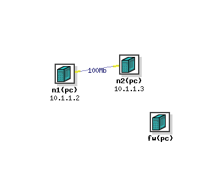

Emulab allows the ability to setup a control-network firewall between an experiment and the outside world. This is not a firewall between nodes within an experiment, that is, the firewall is not part of your NS-specified network topology. The purpose of an Emulab firewall is to prevent experimental traffic from escaping, via the control network, to the internet due to a mis-configured application or router within an experiment. Control net firewalls are also a key component of Emulab ``high-security'' experiment environments.
The firewall is implemented by allocating an additional node to the experiment. Through switch-enforced VLANs, the experiment is given its own private control network connecting all nodes in the experiment. Network traffic between experiment nodes and any hosts outside the experiment (Emulab infrastructure or Internet hosts in general) must pass through the firewall node. The firewall is setup as a filtering layer2 bridge using IPFW2 on FreeBSD and can be configured in a number of ways to block or allow certain types of traffic.
When a firewalled experiment is swapped in, the firewall is setup and activated before any experiment nodes are allowed to setup. When a firewalled experiment is swapped out, extra precautions are taken to ensure that the nodes are decontaminated before the firewall is taken down.
To add a firewall to an Emulab experiment, you specify a Firewall object
in your NS file (there is currently no way to add a firewall via the Emulab
client or experiment creation GUI):
set fw [new Firewall $ns]
$fw set-type <type>
$fw set-style <style>
ipfw2-vlan.
Another type, ipfw, has been deprecated
and should not be used.
In the future, there may be additional types for different firewall
implementations (e.g., Linux with ipchains).
The "style" of the firewall is one of:
open: A completely open firewall allowing all traffic.
This gives you a hook for setting up custom firewall rules (below).
closed: A closed firewall allowing no communication with
the outside world. Nodes can still communicate in a limited fashion with
the Emulab infrastructure.
basic: A mostly closed firewall allowing only ssh
connections with the outside world.
$fw add-rule <IPFW format rule string>
$fw add-numbered-rule <ruleno> <IPFW format rule string>
One should note carefully the following issues.
There is a mighty fine line between a "limitation" and a "bug". But this one probably crosses the line:
Here is the NS code for a simple two node experiment with a firewall:
source tb_compat.tcl
set ns [new Simulator]
set n1 [$ns node]
tb-set-node-os $n1 FBSD-STD
set n2 [$ns node]
tb-set-node-os $n2 RHL-STD
set link [$ns duplex-link $n1 $n2 100Mb 0ms DropTail]
# create a firewall node
set fw [new Firewall $ns]
$fw set-type ipfw2-vlan
$fw set-style basic
# allow traceroute through
$fw add-rule "allow udp from EMULAB_CNET to any 33434-33524"
$fw add-rule "allow udp from any 33434-33524 to EMULAB_CNET"
$ns run
EMULAB_CNET is an example of the limited variable replacement
capability. In the Utah case, it expands to "155.98.36/22". Note that
even though this rule names the entire control net space of all experiments,
it effects only those nodes within this experiment since the firewall is
per-experiment. This NS specification yields a topology that looks like:

No surprises. Two nodes connected by a link, with a "disconnected" firewall
off to the side.
What isn't shown is that all three are connected via the control net.
The firewall is accessible via a DNS name of
fw.experiment.project.emulab.net
similarly to
other nodes. You can login to the firewall, reboot it, etc. just as any
other node.
The Experiment Details web page for the experiment lists
all the rules for the firewall:
Firewall information:
ID Type Style Rule# Rule
--------------- ---------- -------- ----- -----------------------------------
fw ipfw2-vlan basic 2 check-state
10 allow all from me to me
11 deny all from any to me via vlan0
12 deny all from any to EMULAB_CNET via vlan0
13 allow mac-type arp
14 allow all from any to any frag
50 allow udp from any to EMULAB_NS 53 keep-state
100 allow udp from EMULAB_CNET to any 33434-33524
101 allow udp from any 33434-33524 to EMULAB_CNET
60000 allow tcp from any to any 22 setup keep-state
60010 allow ip from any to ntp1,ntp2 123 keep-state
60020 allow udp from any 514 to ops 514
60030 allow ip from any to fs 111 keep-state
60031 allow udp from any not 0-700 to fs keep-state
60032 allow udp from any to fs 900 keep-state
60033 allow udp from any to fs 2049 keep-state
60040 allow tcp from any to boss 5999 setup keep-state
60050 allow ip from any to ops 2917 keep-state
60060 allow udp from any to boss 8509
60080 allow udp from any to EMULAB_MCADDR
60081 allow udp from boss EMULAB_MCPORT to any EMULAB_MCPORT
60082 allow igmp from any to any
60090 allow icmp from any to any
61000 allow udp from any 68 to 255.255.255.255 67 recv vlan0
61001 allow udp from any 67 to any 68 in not recv vlan0
61010 allow udp from any to boss,ops 69 keep-state
61011 allow udp from boss,ops not 0-1023 to any not 0-1023 keep-state
61020 allow udp from any to boss 6969 keep-state
61021 allow ip from any to boss 7777 keep-state
65534 deny all from any to any
EMULAB_ variables. NS
is the Emulab name server IP address, CNET the control network
subnet, MCADDR and MCPORT, the multicast addresses
and ports used by the Frisbee disk loader. Other rules involving the hosts
boss, ops, fs, ntp1,
and ntp2, are Emulab infrastructure related.
ipfw firewallAn earlier, less secure, firewall implementation did not require support from the switching infrastructure. This "software" firewall solution, still allocated an extra node to act as an IP firewall. This node was then set as the default route for all other nodes in the experiment. Thus, all outgoing, non-experimental traffic was passed through the node. Inbound traffic directed to the nodes did not pass through the So in addition to the limitations above you can add the following: